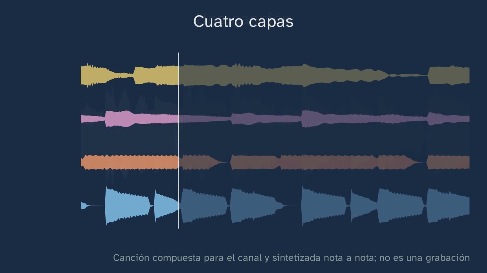

What is a song made of?
In a nutshell
This is the channel's first Music class, and it opens the topic "A song, layer by layer". Its message fits in one line: a song is layers sounding at the same time (rhythm, bass, chords and melody), each with its own job; they reach your ear added together in a single wave, and it is your brain that separates them. All the music heard was composed and synthesised by the channel, note by note: an eight-bar song in C major, at 90 beats per minute, with the progression C – A minor – F – G (I – vi – IV – V) and an original question-and-answer melody. It runs through the whole topic and, when the topic ends, its score and its audio will be published on the channel's Aula site under a CC0 licence. No copyrighted song is played, and Malik speaks and never sings.
Before explaining anything, Malik plays the whole song, which is seen as a single wave, and asks students to count how many things are sounding at the same time (0:44). The hook, with its context: in 1941, in New York, the saxophonist Sidney Bechet made a record playing six instruments by himself, one on top of another; ten years later, Les Paul and Mary Ford reached number one with a song recorded layer by layer, How High the Moon; and today music software works with one track for each layer. But tracks don't reach the ear: a single wave does (2:07).
After retrieving texture from ESO (the song is an accompanied melody), the wave opens into its four tracks, in the piano roll: each block is a note, higher up means higher in pitch and longer means it lasts longer. Anyone who counted more than four also heard correctly: inside the rhythm there are three instruments (3:39). Each layer sounds alone, in the roll and in its staff at the same time, and then all four together in a score; the class compares the two notations (criterion 2.2) and explains that the roll was born for a machine, the player piano, and lives on today as the "piano roll" of music software (5:35). Each layer has its job (the pulse, the floor, the colour and what you sing) and they are told apart by the four parameters of sound (6:23). Students predict which one they will miss most, the song plays with one layer taken away every two bars, and they put into words what they feel without the bass (criterion 1.2).
The second half answers how we know. The air can only push the eardrum in one way at each instant: the four layers, measured over six hundredths of a second, add up into a single line, with no labels (8:51). The cochlea unrolls and each layer lights up the stretch it makes vibrate, measured on its sound with Greenwood's map (1990); but the ear doesn't deliver layers, it delivers many places vibrating, and the bass also lights up those of its harmonics (10:13). Putting them together is the brain's work, and two demonstrations show it to the ear, synthesised by the channel: Bregman's six notes, which played slowly are one leaping melody and played fast split into two streams (10:44), and an interlocking pattern like that of the Ugandan amadinda, where what is played is not what is heard (11:59). The brain's cues: close in pitch, the same timbre, the same place, at the same time, and the harmonics of a single note (12:42).
The typical mistake, "the song is the melody", is taken apart by ear: the same melody, note for note, with its accompaniment and with another one (A minor, F, D minor, E minor) no longer says the same thing, at least to an ear used to our music (13:19). The class closes with a listening challenge (three excerpts, each without one layer) and a short reading (the first five notes of the melody, in treble clef), and the open question: where is the song: in the wave, in the score or in your head?
Objective. By the end, students will know how to tell apart by ear the four layers of a song (rhythm, bass, chords and melody), what each one does and how their hearing separates them even though they reach it mixed in a single wave.
For readers outside Spain: the Bachillerato is the last two years of secondary school (ages 16–18); it follows ESO, the four years of compulsory secondary education (ages 12–16). Musical Language and Practice is a first-year subject in the Music and Performing Arts pathway of the Arts strand of the Bachillerato. The LOMLOE is Spain's current education law, and the BOE is Spain's Official State Gazette, where every law and decree is published. Spain is divided into seventeen autonomous communities (regions), plus the autonomous cities of Ceuta and Melilla; each completes the national curriculum with its own, and this sheet mentions some of them. In Spain the notes are named with a fixed do (do, re, mi, fa, sol, la, si); this sheet uses letter names (C, D, E, F, G, A, B), except in the note on middle C. The video is in Spanish, with English subtitles; the images on this sheet come from the video and keep their Spanish text. Spanish documents (the decrees) are quoted in our translation; English sources are quoted in the original. Decimals are written here with a point (2.5), not with the Spanish comma.
Curriculum
Spain's Royal Decree 243/2022, annex II, Musical Language and Practice, a subject in the Music and Performing Arts pathway of the first year of Bachillerato. The BOE's consolidated text was checked on 28/10/2026: its latest update, of 02/07/2026, does not touch annex II. Our translation of the official Spanish text.
| Element | What the decree says | Where the class works on it |
|---|---|---|
| Core knowledge (block A, Musical language) | "Musical elements in the Western musical tradition, in folk music and in urban popular music." | The whole class: the layers of a present-day song, and the Ugandan amadinda (11:59) |
| Core knowledge (block A) | "Musical representation of the parameters of sound." | The piano roll and the score of each layer (3:39 and 4:05); the four parameters (6:23); the two notations (5:35) |
| Core knowledge (block B, Musical practice) | "Strategies for listening to or viewing musical works or excerpts." | Counting what is sounding (0:44), each layer alone (4:05), taking layers away (6:56), the listening challenge (14:59) |
| Specific competence 1 | "To cultivate active listening, developing attention strategies, in order to recognise and describe with suitable vocabulary the elements that make up a work and to reflect on subjective and emotional aspects inherent in musical perception." | The whole class; the subjective side, at 7:42 and 14:21 |
| Specific competence 2 | "To identify the musical elements of works from different styles and periods, analysing and comparing scores in various notations…" | The roll and the staff, on the same clock (4:05–5:35) |
| Criterion 1.1 | "To recognise and describe the different parameters and musical elements of a work, applying active listening strategies and using suitable specific vocabulary." | The layers, their jobs and their parameters; the listening challenge |
| Criterion 1.2 | "To describe the sensations that music produces and their possible link with the characteristics of the work, reflecting on subjective aspects inherent in musical listening." | Without the bass, emptier, lighter, sadder? (7:42); the same melody with a different accompaniment (14:21) |
| Criterion 2.1 | "To describe the main characteristics of the musical elements (melody, rhythm, harmony, timbre, etc.) present in scores in conventional and non-conventional notation…" | Each layer in its staff and in the roll (4:05–5:20) |
| Criterion 2.2 | "To compare the representation of musical elements in scores in different notations, reflecting on the factors that influence the evolution of musical notation." | The two notations and the player piano (5:35) |
The introduction to the subject supports the approach: "Music requires the cultivation of listening as the natural route of access to its appreciation"; the score, "by connecting perceptual aspects with their graphic representation"; and "The use of music that feels close to the students will make it possible to introduce a motivating element".
What it leaves out, on purpose. Rhythm, harmony, melody, form and timbre are classes 2 to 7 of the topic: here they are heard and named, not studied. Performance (competence 3) and group projects (competence 4) begin in class 2 and in the classroom.
What students need to bring. From ESO (Royal Decree 217/2022, Music): the parameters of sound, textures and reading in treble clef. The class retrieves texture with a question (2:18) and takes reading for granted at its simplest level (16:10). Not everyone brings the same: Music from the 1st to the 3rd year of ESO is taken for one or two years depending on the autonomous community, and anyone who comes from a conservatoire knows much more. For them, the class keeps what no textbook has: the measured cochlea, Bregman and the amadinda.
The hours. In the sixteen autonomous communities compared, four hours a week in the first year (the Basque Country, three as a minimum and four as a reference; Catalonia, from the 2026-27 school year). Topic 1 fits into three or four weeks of classroom time with its practice.
The textbooks. There is no Musical Language and Practice textbook in a LOMLOE edition. The only one on sale, Tabarca's (2018, under the previous law), opens with notation and leaves texture and harmony for unit 7 of 8; the Ministry's twelve learning situations (2025) also start with reading. The channel goes the other way round: listening before the sign, as the decree's introduction asks. It is only for contrast: nothing on this sheet comes from them.
[!info] A note for Catalonia and the Balearic Islands In this subject, Catalonia includes neither urban music nor the physical phenomenon of harmonics, and the Balearic Islands leave out the physical phenomenon of harmonics. The class follows the national minimum; the cochlea and the harmonics can be treated as extension work.
How the class is built
Video chapters
About eighteen minutes, in fifteen chapters. It is a theory class with a lot to listen to: each idea is heard before it is named, and then seen on the same clock as the sound, in the roll and in the score, with only what is sounding lit up. It is the department's model: hear, see and do. Malik appears in his music room, with the piano, the music stands and the keyboard.
| Chapter | What happens | Why this way |
|---|---|---|
| What we'll see (0:00) | Malik introduces himself in his music room. The topic map, with its eight classes and the keyboard that marks the practice ones; no instrument is needed. | The map, in every class. |
| Listen and count (0:44) | The channel's song, whole, as a single wave. How many things are sounding at the same time? | Hearing before naming, and with a task: counting. |
| A song, in layers (1:29) | Bechet (1941), Les Paul and Mary Ford (1951) and today's music software. To camera: a single wave reaches the ear. | The hook, with its context (when, where, who). |
| What you already know (2:18) | Texture from ESO: the song is an accompanied melody. | Retrieving with a question and a pause. |
| Four layers (2:49) | The wave opens into four tracks; the piano roll explained. | The central animation: what is heard together, seen separately. |
| Each layer, alone (4:05) | Each layer alone, in the roll and in its staff at the same time; all four in a score; the two notations and the player piano. | Hear, see and do: the same clock for the sound, the roll and the score (criteria 2.1 and 2.2). |
| What each one does (6:07) | The jobs (pulse, floor, colour, what you sing) and the four parameters of sound. | Vocabulary to describe what is heard (criterion 1.1). |
| If we take a layer away (6:56) | Predicting, hearing the song without one layer every two bars and putting into words what you feel. | Predict, observe and explain; the subjective side, with reasons (criterion 1.2). |
| A single wave (8:33) | The four real waves, over six hundredths of a second, add up into one line. | How do we know? The first piece of evidence: the physics of the wave. |
| Inside the ear (9:25) | The cochlea unrolls and each layer lights up its stretch, measured; the bass's harmonics. | The second piece of evidence: the inner ear sorts out frequencies, not layers. |
| Your brain decides (10:44) | Bregman's six notes, slow and fast; the amadinda; the brain's five cues. | The third piece of evidence, by ear: what is played is not what is heard. |
| A song is not just the melody (13:19) | The melody alone, with its accompaniment and with another one. | The typical mistake, taken apart by listening. |
| Which layer is missing? (14:59) | Three excerpts, each without one layer, and their answers. | Aural perception of increasing difficulty (description of competence 1). |
| A short reading (16:10) | The first five notes of the melody, in treble clef, and how they sound. | A reading or a short dictation in every class (article 15). |
| Practice (16:49) | Three exercises, the open question and Malik's goodbye. | The solutions, in class 2. |
A plan for a 50-minute lesson
Designed for watching in class with a projector and good speakers (with a laptop's speakers, the bass and the cochlea come across less well: see "Notes"). Paper and pencil on the desk. If the video is watched at home, as a flipped class, the session can be devoted entirely to the activity.
| Minutes | What is done |
|---|---|
| 0–2 | No video. Paper and pencil. Don't say what the class is about. |
| 2–6 | Video up to 1:22. Each student writes down how many things are sounding at the same time, without talking. Collect the numbers by a show of hands: there will almost certainly be several. |
| 6–20 | Video up to Malik's appearance halfway through (8:29). Stop at 3:26: does the number match? Anyone who counted six was not wrong (the bass drum, the snare and the hi-hat). Stop at 6:56: the prediction, by a show of hands. Stop at 7:42: one word per person, without correcting. |
| 20–34 | Video up to the end of the listening challenge (15:50). Stop at 11:12: the prediction. The answers to the challenge, in the exercise book. |
| 34–36 | The reading (16:10) and the open question. |
| 36–50 | The activity: "The layers of a song, in the classroom". |
Typical mistakes and how they are handled
With the usual warning: none of them has been measured with Spanish Bachillerato students. They are the ones the topic sheet anticipated, the ones the script review pointed out and the ones that circulate in books and on the internet.
- "The song is the melody; the rest is accompaniment." The class takes it apart by ear (13:19): the same melody with other chords underneath says something else. With a caveat: whether minor sounds "sad" depends on what you are used to; in a community in Papua New Guinea with little contact with Western music, major cadences did not sound happier (Smit et al., 2022, 170 people there and 79 in Sydney), and in north-west Pakistan the pairing of major with happy and minor with sad even appears reversed (Lahdelma et al., 2021). That is why the class says "to an ear used to our music".
- "I count four things, so there are four instruments." A layer is not an instrument: the rhythm is three (bass drum, snare and hi-hat), and in the channel's song the chords are three notes at once. The class says so at 3:39. In a recorded song, one layer can be several tracks.
- "What is played is what is heard." The ear groups things on its own: Bregman's six notes split into two streams when they go fast, and in the amadinda two regular rhythms are heard as two other, irregular ones. Bregman sums it up with a phrase by Ulrich Wegner: "the difference between what is played and what is heard" (Bregman and Ahad, 1996, p. 23).
- "The ear separates the layers." What the inner ear separates are frequencies, each in its place in the cochlea; grouping them into layers is the brain's work, with cues: pitch, timbre, the place the sound comes from, starting at the same time and harmonicity (the harmonics of a single note are heard together). Bregman (1990) and the review by Moore and Gockel (2012).
- "Frequency is pitch." For the class, "each frequency, that is, each pitch" is enough (9:25), but it is worth refining: frequency is physical and pitch is what we hear. A sound with many harmonics is heard at the pitch of its fundamental even though it makes many places vibrate; class 3 takes this to the extreme (the missing fundamental).
- "The bass carries the rhythm because the ear measures time better in low sounds." It is often repeated, but it has not been proven: it was proposed by a study with 17 and 18 people (Hove et al., 2014) and another, also small, did not confirm it (Wojtczak, Mehta and Oxenham, 2017). What is certain is the custom: in Western music, the melody usually goes on top and the rhythm is marked by the low instruments. That is why the class gives no explanation of why the bass goes with the bass drum: it shows it.
- "Les Paul invented layered recording." Sidney Bechet recorded six instruments by himself in 1941, and the University of California, Santa Barbara's catalogue of historical recordings (the Discography of American Historical Recordings) calls it an "early instance of overdubbing". Les Paul took it to the hit record. And his big hits were recorded before the eight-track tape recorder, on an Ampex to which he added a head: as he told it, he recorded the parts in the order that best withstood the wear on the sound, not in the logical order.


Questions and solutions
Stop and think (in the video)
- Count how many different things are sounding at the same time (0:44). Four layers; anyone who separated the bass drum, the snare and the hi-hat counts six, and is hearing correctly.
- What is an accompanied melody? (2:18). A melody that stands out, with other parts underneath accompanying it.
- Does it match your number? (3:26). See the first one.
- Which one will you miss most? (6:56). There is no right answer. What can be said is what is lost with each one: without the melody, nothing to sing; without the chords, the colour; without the bass, the floor; without the rhythm, the pulse.
- Without the bass, did the song seem emptier, lighter, sadder to you? (7:42). It is a question about feelings (criterion 1.2): every answer is valid if it is reasoned from what happens in the music. What happens: without the bass, the lowest sounds disappear, and so does the bottom note of each chord.
- Will you still hear a single melody? (11:12). No: when fast, two streams are heard, a high one and a low one. If someone still hears just one, that's not wrong either: the splitting grows with listening time and with speed (Moore and Gockel, 2012).
- Does it say the same thing to you? (14:21). The melody is the same; underneath, three of the four chords are minor. To an ear used to Western music it usually sounds darker.
- The listening challenge (14:59). 1, the melody; 2, the bass; 3, the chords.
- The reading (16:10). G, C, E, D and C (preceded by a quaver rest).
Practice (the solutions, at the start of class 2)
- In a song you like, write down the second at which each layer comes in. It depends on the song. The model answer, with the channel's song: all four come in at the same time, at second zero; the melody, off the beat (after a quaver rest). In a recorded song, they usually come in a few at a time: it is a good way to hear each layer.
- If its intro doesn't have all the layers, say which ones are missing. It depends on the song. The most common thing in pop is for the melody, the voice, to be missing in the intro; but it is worth listening for it, not assuming it.
- Explain in your own words how come you hear several things, if a single wave reaches your ear. A complete answer: the wave is the sum of all the layers; the inner ear sorts out its frequencies, each in a place in the cochlea; and the brain groups them into layers with cues: what is close in pitch, what has the same timbre, what comes from the same place, what starts at the same time and the harmonics of a single note.
Keep thinking. Where is the song: in the wave that reaches your ear, in the score, or in your head? It has no textbook answer. Three paths for the conversation: the wave is what can be measured and recorded; the score, what can be kept and passed on even when it isn't sounding; and what we hear depends on who is listening, as we have just seen. If you get a good discussion going, tell us about it in the Ágora, in this class's teachers' thread.
A classroom activity
The layers of a song, in the classroom (about 15 minutes, in pairs and as a whole class; it works on the listening core knowledge of block B and criteria 1.1 and 1.2).
Materials: a song with a free licence, chosen by the teacher, that has its tracks available separately. ccMixter (https://ccmixter.org) publishes songs and their tracks ("stems") under Creative Commons licences: you need to check each one's licence (CC BY or CC BY-NC are fine for the classroom) and note its author. If none can be found, any song the group knows will do: it is listened to and analysed, without the tracks.
- Count (3 minutes). The whole song is played once. Each pair writes down how many layers they hear and at which second each one comes in.
- Check (5 minutes). With the separate tracks, each one is played alone: which layer is each one? Is any layer several tracks, or does any track do two jobs?
- Take away (4 minutes). The layers are taken away one at a time, as in the video. Each pair writes a word for what they feel without each one, and reasons it from what happens in the music (criterion 1.2).
- As a whole class (3 minutes). Do the numbers match? Which layer was hardest to hear, and why? It is usually the one in the middle, which stands out neither in pitch nor in rhythm.
For teachers: what they will find. Almost every pair will hear the melody and the rhythm; the bass is harder if the speakers are small, and the chords, when there is a guitar and a keyboard at the same time, are easily confused. That's fine: it is the best opportunity to go back to the brain's cues (timbre, pitch, place, starting together). Criteria: the student names the layers with the right vocabulary, explains each one's job and describes what they feel, drawing on what is sounding.
Another option: making layers with Song Maker. On the free Song Maker website, from Chrome Music Lab (https://musiclab.chromeexperiments.com/Song-Maker/), with no account, each student draws on a grid, which is a piano roll, a two-bar melody with a rhythm underneath. Saving it creates a public link: make sure it doesn't carry their name or any personal data.
Open resources
- MuseScore Studio 4, a free and open-source score editor (GNU GPL licence), at no cost, in Spanish and with no account, for computers (Windows, macOS and Linux; there is no version for phones or tablets): https://musescore.org/en. Version 4.7.6 came out on 26 October 2026. It is the program for the topic's workshop (class 8): it is worth finding out beforehand which students don't have a computer at home and reserving the school's computers for them.
- Audacity, a free and open-source audio editor: its spectrogram view shows the frequencies of a recording, like the class's cochlea: https://www.audacityteam.org.
- Song Maker, from Chrome Music Lab (Google), free and in the browser: a piano roll for composing without installing anything: https://musiclab.chromeexperiments.com/Song-Maker/.
- Ableton Learning Music, in the browser and free, for making rhythms and melodies in layers (it doesn't save or export): https://learningmusic.ableton.com/.
- Bregman's demonstrations, with their booklet in PDF, on the author's page at McGill: https://webpages.mcgill.ca/staff/Group2/abregm1/web/. Their audio has all rights reserved: it can be listened to on his page, not copied.
- ccMixter, songs and their separate tracks under Creative Commons licences: https://ccmixter.org.
Notes for teachers
- The speakers. The bass of the channel's song carries harmonics between 250 and 1600 Hz, so it can also be heard on a laptop or a phone, even though their speakers can't produce the lowest notes. But with headphones or good speakers it sounds much better, and the cochlea makes more sense. Why the bass can be heard on a phone is class 3, "The bass, the note you can't see".
- The measured cochlea. What is seen in the cochlea is not a drawing: it is the spectrum of each layer, just as it sounds, taken to its place with Greenwood's function (1990) for the human ear, with the shape of the travelling wave (it rises slowly from the base and drops sharply past its place) and weighted as the ear hears it (A-weighting). Each layer is scaled to its own maximum: it shows where it vibrates, not how much. It is a model, and the class says no more than the model says.
- Bregman's six notes. The channel synthesises them with the frequencies of the original demonstration (high ones of 2500, 2000 and 1600 Hz; low ones of 350, 430 and 550 Hz), at 2.5 notes per second when slow and 10 when fast. Bregman and Campbell's experiment (1971) had 32 students, so the class doesn't give its figure (the channel doesn't present studies of a few dozen people as evidence): it says what students hear and invites them to check it.
- The amadinda. It is a xylophone from Buganda (Uganda) played by three musicians: two interlock their parts and the third plays on the high keys. The example in the video is not an amadinda piece: it is a pattern by the channel with the same idea (two regular rhythms of 4.2 notes per second, interlocked), whose high notes fall every 3, 3 and 2 slots. The piece Bregman describes, recorded by Ulrich Wegner, is under copyright and is not played.
- Middle C. In the classroom, the notation of Spain's conservatoires and textbooks is used: middle C is do3 (and the tuning-fork A, la3 = 440 Hz). In English-language notation it is C4. The class gives no octave numbers in the voice.
What the class leaves out, and why
- Love songs are not recognised across cultures, and lullabies are. It is a very solid result (Mehr et al., 2018 and 2019, with 750 and 29,357 listeners; Yurdum et al., 2023, with 5,632), but it doesn't answer the class's question. It goes to topic 6, "Is music a universal language?".
- The ear measures time better in low sounds. See mistake 6: it is a hypothesis with small studies and a replication against it.
- The score of a famous song. Copyrighted songs are named and linked, but they are not played or transcribed in the video.
Sources
Curriculum
- Royal Decree 243/2022, annex II, Musical Language and Practice, consolidated text (in Spanish): https://www.boe.es/buscar/act.php?id=BOE-A-2022-5521.
- Royal Decree 217/2022 (ESO), Music: https://www.boe.es/buscar/act.php?id=BOE-A-2022-4975.
Recording in layers
- Discography of American Historical Recordings (UC Santa Barbara), Victor BS-063785, "The sheik of Araby", 18 April 1941, New York: https://adp.library.ucsb.edu/index.php/matrix/refer/200050103.
- R. Buskin (2007), "Classic Tracks: Les Paul & Mary Ford, How High The Moon", Sound on Sound: https://www.soundonsound.com/node/4911755; PBS American Masters, Les Paul's career timeline: https://www.pbs.org/wnet/americanmasters/episodes/les-paul/career-timeline/101/.
The ear and the brain
- A. S. Bregman (1990). Auditory Scene Analysis: The Perceptual Organization of Sound. MIT Press.
- A. S. Bregman and P. A. Ahad (1996). Demonstrations of Auditory Scene Analysis: The Perceptual Organization of Sound. MIT Press (CD and booklet), pp. 6, 11, 12-13 and 23: https://webpages.mcgill.ca/staff/Group2/abregm1/web/snd/ASA-Demo-Booklet9V4.pdf.
- A. S. Bregman and J. Campbell (1971). Primary auditory stream segregation and perception of order in rapid sequences of tones. Journal of Experimental Psychology, 89(2), 244-249.
- B. C. J. Moore and H. E. Gockel (2012). Properties of auditory stream formation. Philosophical Transactions of the Royal Society B, 367, 919-931. doi:10.1098/rstb.2011.0355.
- D. D. Greenwood (1990). A cochlear frequency-position function for several species—29 years later. Journal of the Acoustical Society of America, 87(6), 2592-2605. doi:10.1121/1.399052.
- In memoriam: Albert S. Bregman (1936-2023), CIRMMT; McGill University Department of Psychology.
Major and minor
- C. Smit, A. Milne, H. Sarvasy and R. Dean (2022). PLOS ONE, 17(6), e0269597. doi:10.1371/journal.pone.0269597.
- I. Lahdelma, G. Athanasopoulos and T. Eerola (2021). Annals of the New York Academy of Sciences. doi:10.1111/nyas.14655.
The bass and the rhythm (what is not said)
- J. Hove, C. Marie, I. Bruce and L. Trainor (2014). PNAS, 111(28), 10383-10388. doi:10.1073/pnas.1402039111.
- M. Wojtczak, A. Mehta and A. Oxenham (2017). PNAS, 114(6), 1201-1206. doi:10.1073/pnas.1615669114.
The player piano
- Photo: "Pianola paper tape", Warsaw Museum of Technology, Krzysztof S pl, CC BY-SA 4.0: https://commons.wikimedia.org/wiki/File:Pianola_paper_tape.JPG.

About this class
GinCol Lab is a free science channel for curious minds. Malik is an illustrated character, not a real person, and his voice is synthetic: computer-generated with Microsoft Azure AI Speech and not imitating any known person. All the music was composed and synthesised by the channel, note by note, with numpy and pedalboard; no one else's recording is played. The script and this sheet are written by an AI (Claude, by Anthropic); the script was reviewed by an independent agent with the channel's rubric, and a person reviews everything before it is published. Every fact is checked in two sources or in the original, and every calculation by running it. This English version was translated by the same AI and reviewed by a person. If you spot a mistake, tell us: learning also means correcting.
This sheet is published under a Creative Commons Attribution 4.0 licence: you can copy it, adapt it and use it in your classroom, crediting GinCol Lab. The images come from the video's board, drawn by the channel; the player piano photo has its own licence (CC BY-SA 4.0). The figures and the quotations belong to their authors. The sentences quoted from copyrighted articles and books (Bregman and Ahad, Wegner) are short quotations with their source: they are not covered by this sheet's CC BY licence.
How to cite this sheet
GinCol Lab (2026). What is a song made of? GinCol Lab teacher sheet: Musical Language and Practice · 1st year of Bachillerato · A song, layer by layer · Class 1 of 8. https://gincollab.github.io/aula/en/lenguaje-y-practica-musical/t01-c1/. CC BY 4.0.
GinCol Lab teacher sheet · CC BY 4.0 · Source and errata